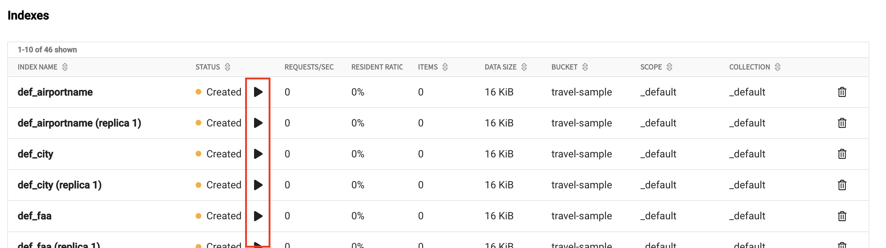

Restore a Backup
You can restore a backup to the same database where it was created or another database in the same organization.
Use the procedures on this page to restore data from a bucket backup. For more information about how to create and manage backups, see Manage Backups. For more information about how backups work in Couchbase Capella, see Backup and Restore Data.
Prerequisites
|
Permissions Required
To view and restore bucket data from a backup:
|
-
The source database that created the bucket backup must still exist.
-
You can only restore backups to a database running the same major version or later as the database that created the backup.
-
You can only restore data to an existing bucket with the same name and conflict resolution methods as the bucket from the backup.
Restore a Bucket
Couchbase recommends that you only restore data from bucket backups in worst-case scenarios. You should use other recovery methods, such as XDCR replication from a redundant database as the primary recovery method.
|
Capella resolves any conflicts during the restore with the conflict resolution method configured for the buckets. For example, if a key-value pair in the target bucket is newer than the one in the backup, then the one from the backup isn’t restored unless otherwise specified in the restore settings. |
-
Open the Backup page for your database:
-
With the Projects tab in your organization open, click the project with the database you want to work with.
-
With the Databases tab open, select your database.
-
Click the Backup tab.
-
-
Select the bucket you want to restore.
-
Click Restore for the backup you want to restore.
Clicking the From Date date picker allows you to select a previous date for a backup cycle or on-demand backup. -
Specify the Destination Database.
The restore location can be the current database (chosen by default) or a different database in your organization. If you select Restore to a different database, the Database list appears.
-
When restoring to a different database, use the Database list to select the database that’s the destination of the restore. You can only restore to a database in the same organization.
-
-
Choose the Services to Restore.
-
Select each service you want to restore. By default, all options are selected. You must select at least one service.
-
-
(Optional) Apply Other Options.
-
Overwrite Documents From Backup
When enabled, this option overwrites later versions of documents with earlier versions from the backup. By default, this option is deselected.
-
Automatically Remove Deleted Collections
When enabled, this option removes empty collections from the restore. By default, this option is deselected.
-
Automatically Create Missing Buckets
Use this option to restore a deleted bucket. If you leave this option disabled and try to restore a backup for a bucket that no longer exists, the restore process will fail. By default, this option is disabled.
-
Filter Keys
Use this field to enter a regular expression (RE2) to filter keys. You can use Filter Keys to restore a specified portion of your dataset from the backup.
-
Filter Values
Use this field to enter a regular expression (RE2) to filter values. You can use Filter Values to restore a specified portion of your dataset from the backup.
-
Include Data
Use this field to include only specific buckets, scopes, or collections from the backup. Use this field to restore only specific data containers. Use the following format for Include Data items:
bucket.scope, orbucket.scope.collection.As buckets can contain periods, they must be escaped: my\.bucket.my-scope.Included data can only be specified once and can’t overlap, for example
bucket1andbucket1.scope1. -
Exclude Data
Use this field to define any buckets, scopes, or collections you want to exclude from the restore. Use this field to restore all data containers except the items in this field. Excludes are defined as follows:
bucket.scope, andbucket.scope.collection.
-
-
To start the restore, click Restore Backup.
There can be a delay while Capella schedules the restore. Once the restore starts, its status appears on the Database page. Capella also adds backup and restore events to the Activity Log.
Restore Indexes
|
Permissions Required
To access indexes in the Couchbase Capella UI:
|
If GSI indexes were included in the bucket you restored, they’re automatically restored in a round-robin fashion among the current nodes running the Index Service. These indexes are created, but not built.
Indexes are created and not built because Couchbase Capella doesn’t know the optimal index topology ahead of time. By not building the indexes, Capella gives you the option to manually move each index between nodes and build them yourself. However, if you find the automatic index distribution acceptable, you can use the Capella UI to rebuild each index.
- To Rebuild an Automatically-Restored GSI Index
-
-
Open the Indexes page for your database:
-
With the Projects tab in your organization open, select the project with the database you want.
-
With the Databases tab open, select your database.
-
Click the Data Tools tab.
-
In the navigation menu, click Indexes.
-
-
Each restored index displays a status of Created. In the Status column, click the Play icon for each index you want to rebuild.
Each index you build displays the Ready status when the process is complete.
-